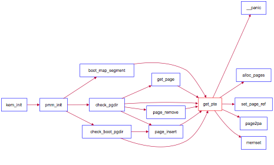

###建立虚拟页和物理页帧的地址映射关系
建立二级页表
Intel 80386采用了二级页表来建立线性地址与物理地址之间的映射关系。由于我们已经具有了一个物理内存页管理器default_pmm_manager，支持动态分配和释放内存页的功能，我们就可以用它来获得所需的空闲物理页。在二级页表结构中，页目录表占4KB空间，可通过alloc_page函数获得一个空闲物理页作为页目录表（Page Directory Table，PDT）。同理，ucore也通过这种类似方式获得一个页表（Page Table，PT）所需的4KB空间。
整个页目录表和页表所占空间大小取决与二级页表要管理和映射的物理页数。假定当前物理内存0~16MB，每物理页（也称Page Frame）大小为4KB，则有4096个物理页，也就意味这有4个页目录项和4096个页表项需要设置。一个页目录项（Page Directory Entry，PDE）和一个页表项（Page Table Entry，PTE）占4B。即使是4个页目录项也需要一个完整的页目录表（占4KB）。而4096个页表项需要16KB（即4096*4B）的空间，也就是4个物理页，16KB的空间。所以对16MB物理页建立一一映射的16MB虚拟页，需要5个物理页，即20KB的空间来形成二级页表。
完成前一节所述的前两个阶段的地址映射变化后，为把0~KERNSIZE（明确ucore设定实际物理内存不能超过KERNSIZE值，即0x38000000字节，896MB，3670016个物理页）的物理地址一一映射到页目录项和页表项的内容，其大致流程如下：
指向页目录表的指针已存储在boot_pgdir变量中。
映射0~4MB的首个页表已经填充好。
调用boot_map_segment函数进一步建立一一映射关系，具体处理过程以页为单位进行设置，即
linear addr = phy addr + 0xC0000000
设一个32bit线性地址la有一个对应的32bit物理地址pa，如果在以la的高10位为索引值的页目录项中的存在位（PTE_P）为0，表示缺少对应的页表空间，则可通过alloc_page获得一个空闲物理页给页表，页表起始物理地址是按4096字节对齐的，这样填写页目录项的内容为
页目录项内容 = (页表起始物理地址 & ~0x0FFF) | PTE_U | PTE_W | PTE_P
进一步对于页表中以线性地址la的中10位为索引值对应页表项的内容为
页表项内容 = (pa & ~0x0FFF) | PTE_P | PTE_W
其中：
PTE_U：位3，表示用户态的软件可以读取对应地址的物理内存页内容
PTE_W：位2，表示物理内存页内容可写
PTE_P：位1，表示物理内存页存在
ucore的内存管理经常需要查找页表：给定一个虚拟地址，找出这个虚拟地址在二级页表中对应的项。通过更改此项的值可以方便地将虚拟地址映射到另外的页上。可完成此功能的这个函数是get_pte函数。它的原型为
pte_t *get_pte(pde_t *pgdir, uintptr_t la, bool create)
下面的调用关系图可以比较好地看出get_pte在实现上述流程中的位置：

图6 get_pte调用关系图
这里涉及到三个类型pte_t、pde_t和uintptr_t。通过参见mm/mmlayout.h和libs/types.h，可知它们其实都是unsigned int类型。在此做区分，是为了分清概念。
pde_t全称为 page directory entry，也就是一级页表的表项（注意：pgdir实际不是表项，而是一级页表本身。实际上应该新定义一个类型pgd_t来表示一级页表本身）。pte_t全称为 page table entry，表示二级页表的表项。uintptr_t表示为线性地址，由于段式管理只做直接映射，所以它也是逻辑地址。
pgdir给出页表起始地址。通过查找这个页表，我们需要给出二级页表中对应项的地址。虽然目前我们只有boot_pgdir一个页表，但是引入进程的概念之后每个进程都会有自己的页表。
有可能根本就没有对应的二级页表的情况，所以二级页表不必要一开始就分配，而是等到需要的时候再添加对应的二级页表。如果在查找二级页表项时，发现对应的二级页表不存在，则需要根据create参数的值来处理是否创建新的二级页表。如果create参数为0，则get_pte返回NULL；如果create参数不为0，则get_pte需要申请一个新的物理页（通过alloc_page来实现，可在mm/pmm.h中找到它的定义），再在一级页表中添加页目录项指向表示二级页表的新物理页。注意，新申请的页必须全部设定为零，因为这个页所代表的虚拟地址都没有被映射。
当建立从一级页表到二级页表的映射时，需要注意设置控制位。这里应该设置同时设置上PTE_U、PTE_W和PTE_P（定义可在mm/mmu.h）。如果原来就有二级页表，或者新建立了页表，则只需返回对应项的地址即可。
虚拟地址只有映射上了物理页才可以正常的读写。在完成映射物理页的过程中，除了要象上面那样在页表的对应表项上填上相应的物理地址外，还要设置正确的控制位。有关 x86 中页表控制位的详细信息，请参照《Intel® 64 and IA-32 Architectures Software Developer ’s Manual – Volume 3A》4.11 节。
只有当一级二级页表的项都设置了用户写权限后，用户才能对对应的物理地址进行读写。所以我们可以在一级页表先给用户写权限，再在二级页表上面根据需要限制用户的权限，对物理页进行保护。由于一个物理页可能被映射到不同的虚拟地址上去（譬如一块内存在不同进程间共享），当这个页需要在一个地址上解除映射时，操作系统不能直接把这个页回收，而是要先看看它还有没有映射到别的虚拟地址上。这是通过查找管理该物理页的Page数据结构的成员变量ref（用来表示虚拟页到物理页的映射关系的个数）来实现的，如果ref为0了，表示没有虚拟页到物理页的映射关系了，就可以把这个物理页给回收了，从而这个物理页是free的了，可以再被分配。page_insert函数将物理页映射在了页表上。可参看page_insert函数的实现来了解ucore内核是如何维护这个变量的。当不需要再访问这块虚拟地址时，可以把这块物理页回收并在将来用在其他地方。取消映射由page_remove来做，这其实是page_insert的逆操作。
建立好一一映射的二级页表结构后，由于分页机制在前一节所述的前两个阶段已经开启，分页机制到此初始化完毕。当执行完毕gdt_init函数后，新的段页式映射已经建立好了。
在pmm_init函数建立完实现物理内存一一映射和页目录表自映射的页目录表和页表后，ucore看到的内核虚拟地址空间如下图所示：

图7 最终虚拟地址空间图